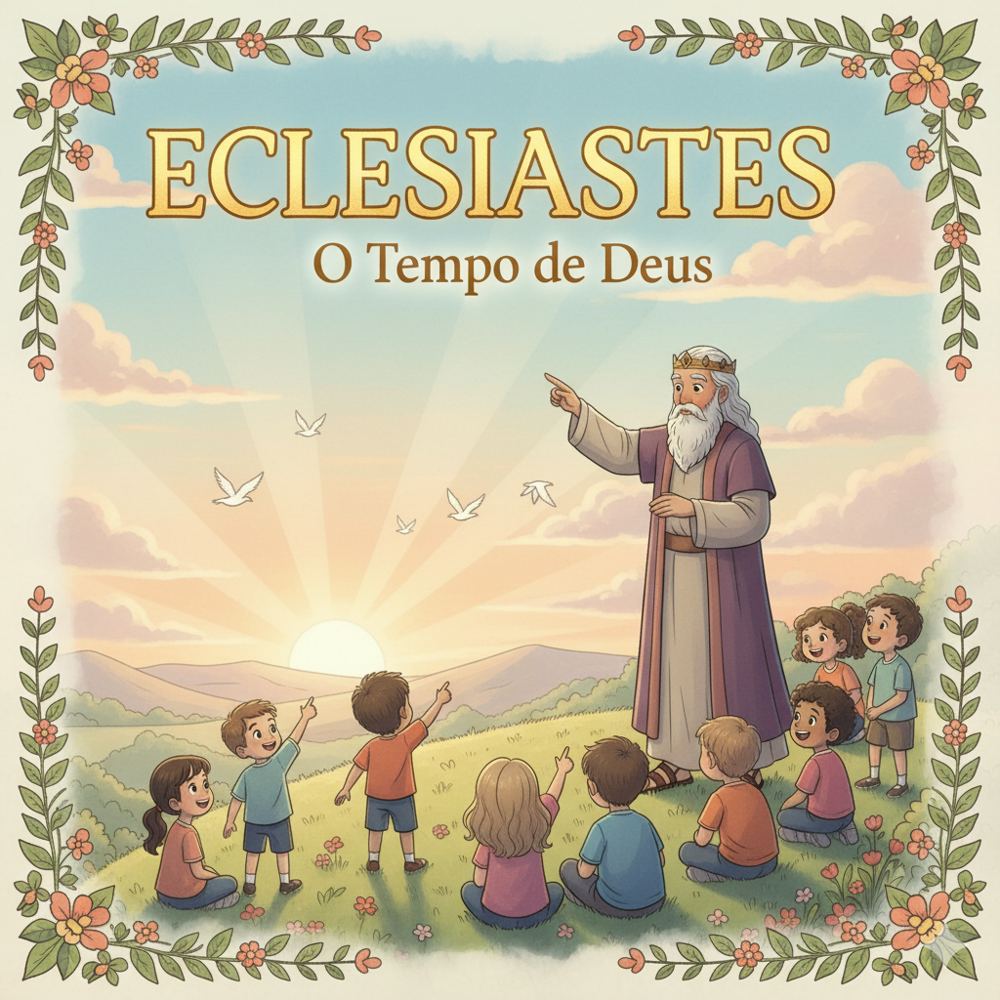
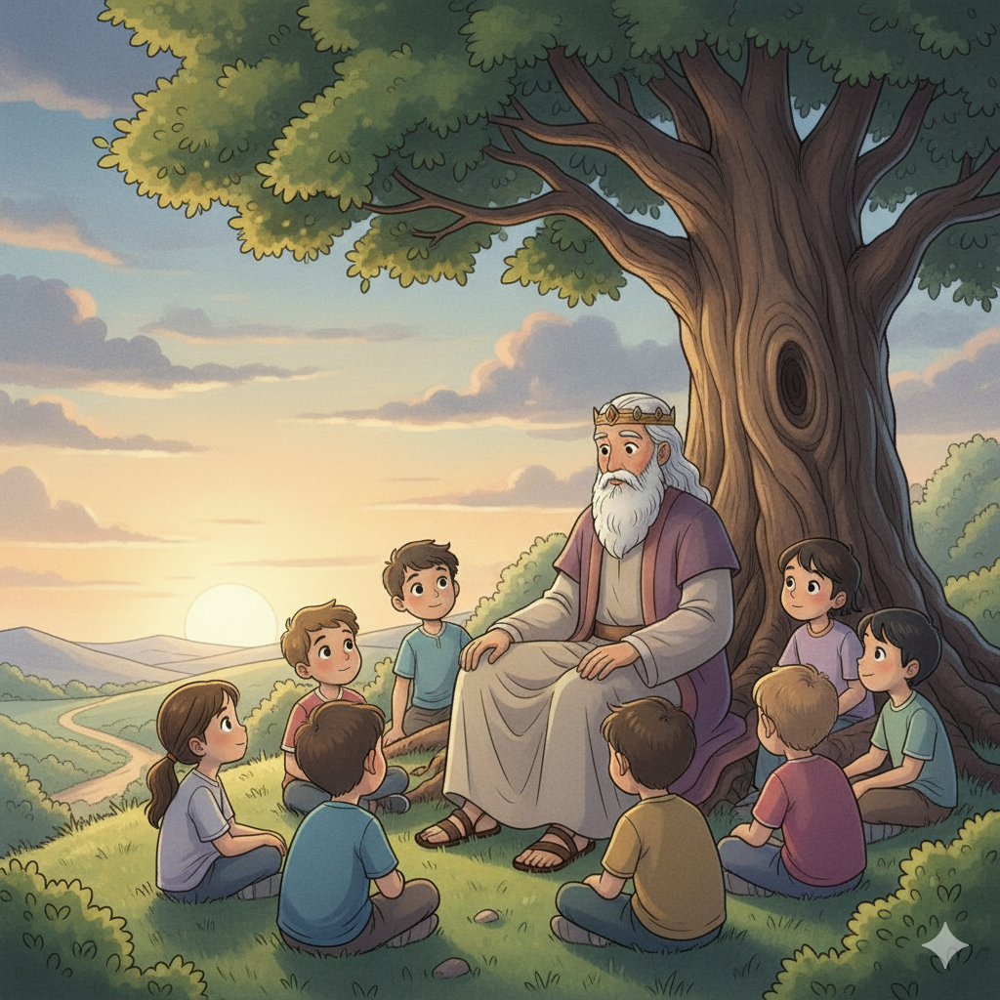
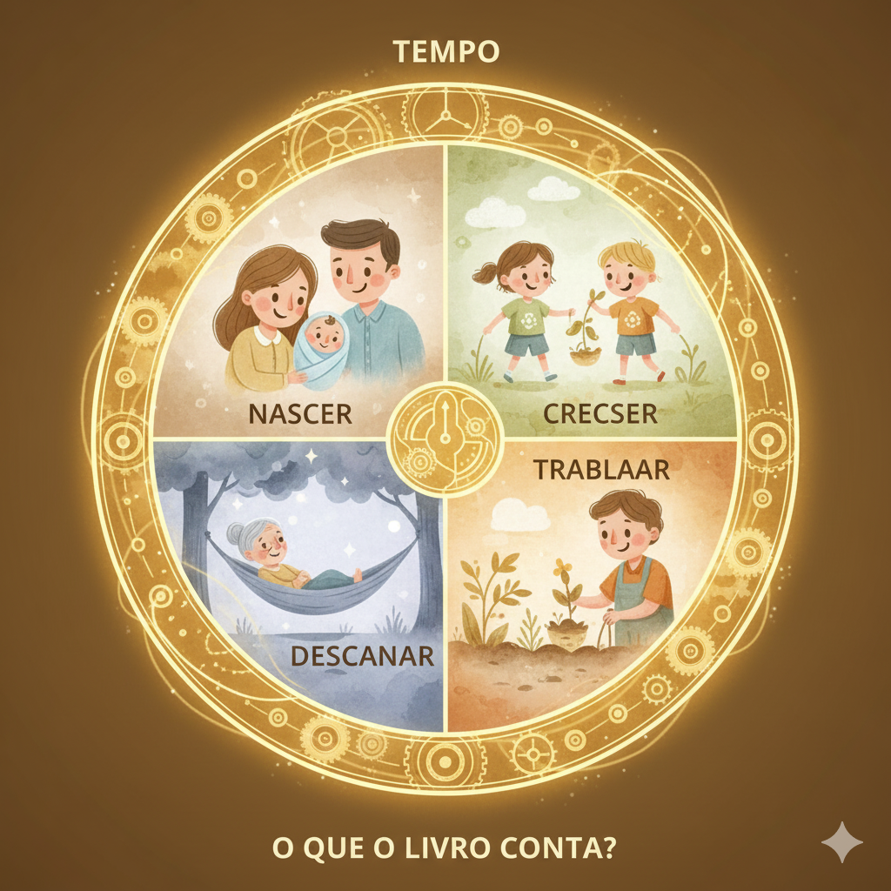
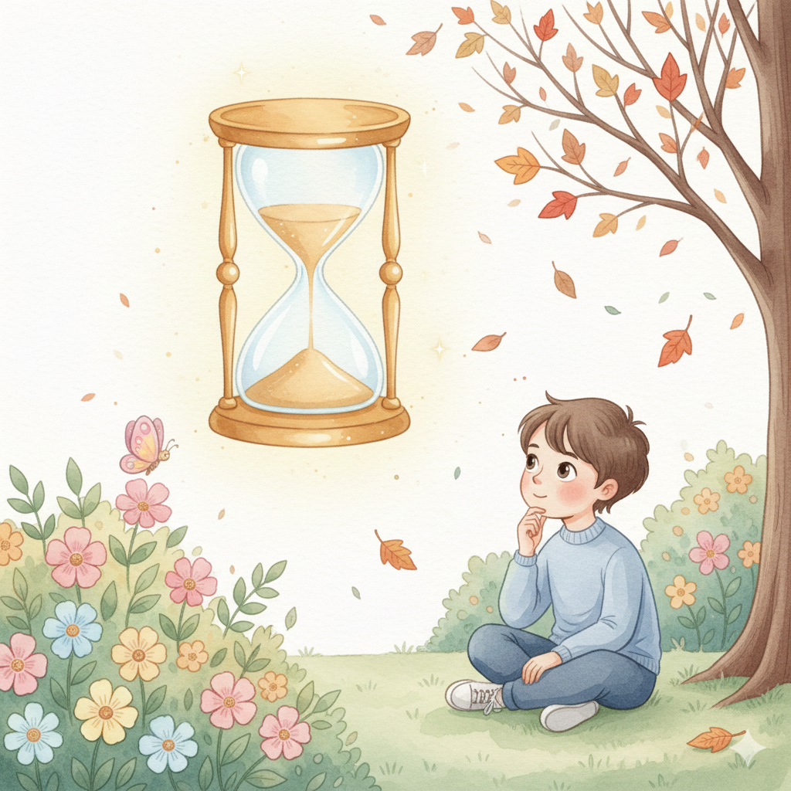
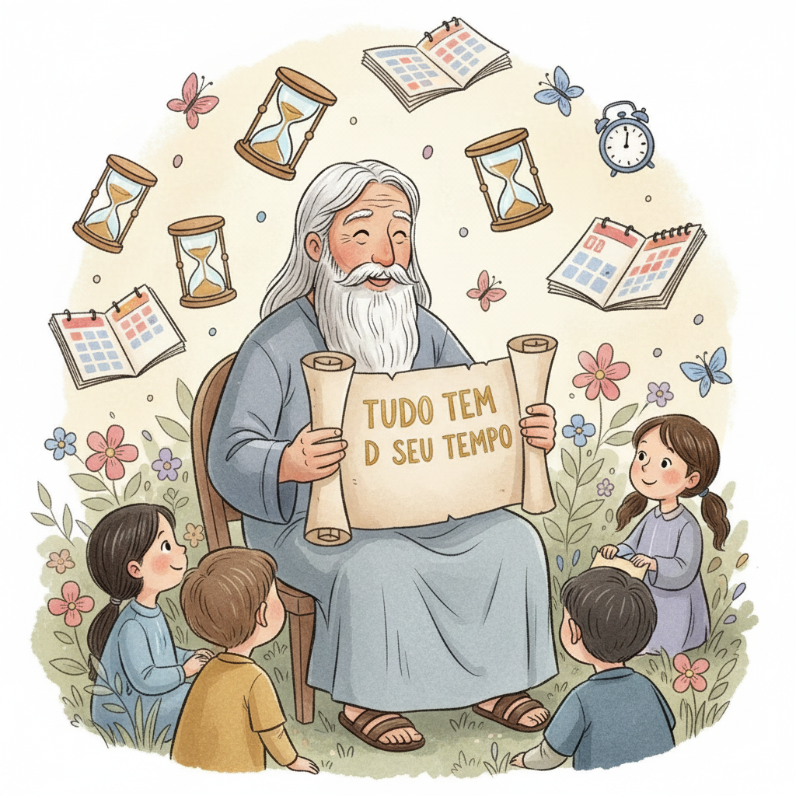

Propósito, Tempo e o Sentido da Vida — Um Resumo Visual para Crianças
Salomão teve tudo: riqueza, fama e sabedoria,
Mas sem Deus no centro, não havia alegria.
"Vaidade de vaidades!", ele concluiu,
Tudo que não é de Deus logo se perdiu!
Brinquedos, fama, dinheiro — tudo passa,
Só o amor de Deus é o que nunca cansa!
📖 Eclesiastes 1:2 — "Vaidade de vaidades, diz o pregador, vaidade de vaidades! Tudo é vaidade."
"Há tempo de plantar e tempo de colher,
Tempo de rir e tempo de chorar também!"
Cada fase da vida tem um propósito especial,
Deus controla tudo com amor sem igual!
Não se desespere nos momentos difíceis,
Deus está fazendo tudo formoso — confie nele e sorri!
📖 Eclesiastes 3:1 — "Tudo tem o seu tempo determinado; há tempo para todo propósito debaixo do céu."
Depois de tudo que viu e aprendeu,
Salomão a grande conclusão descobriu:
"Teme a Deus e guarda Seus mandamentos,
Este é o dever de todos os momentos!"
Viver para o Criador — esta é a vida com sentido,
Com Deus no coração, nada fica esquecido!
📖 Eclesiastes 12:13 — "Teme a Deus e guarda os seus mandamentos, porque isto é o dever de todo homem."
⏰
"Lembra-te do teu Criador nos dias da tua mocidade."
Eclesiastes 12:1
Salomão descobriu tarde que precisava de Deus em primeiro lugar. Por isso, ele fala diretamente com os jovens: não espere crescer para viver com Deus — comece agora, enquanto é cedo! Hoje é o melhor momento!
"Qohélet" significa "pregador" ou "aquele que reúne a assembléia". Salomão usou esse nome para contar sua jornada: ele experimentou riqueza, prazer, sabedoria e trabalho — e descobriu que tudo é vazio sem Deus.
📖 Leia na Bíblia — Eclesiastes 1:12-13
"Eu, o pregador, fui rei de Israel em Jerusalém. Propus-me a investigar e esquadrinhar com sabedoria tudo o que se faz debaixo do céu."
No capítulo 12, Salomão fala diretamente com o jovem: "Lembra-te do teu Criador nos dias da tua mocidade." Você é esse jovem! O livro inteiro é uma carta de um homem sábio para crianças e jovens: não percam tempo buscando o que não satisfaz!
📖 Leia na Bíblia — Eclesiastes 12:1
"Lembra-te do teu Criador nos dias da tua mocidade, antes que venham os maus dias."
Eclesiastes observa a vida "debaixo do sol" — o mundo como ele é, com injustiças, trabalho, alegrias e tristezas. O pregador nos convida a olhar a vida de frente e escolher colocar Deus no centro de tudo.
📖 Leia na Bíblia — Eclesiastes 3:11
"Ele fez tudo formoso no seu tempo; também pôs a eternidade no coração do homem."


📖 Leia em casa!
Eclesiastes tem 12 capítulos. O capítulo 3 tem a famosa lista "há tempo para tudo" — e o capítulo 12 tem a grande conclusão!
🔍 Tentando Encontrar Sentido
Salomão testou tudo: sabedoria, prazer, construções, riquezas, trabalho. Cada vez concluiu: "Isso também é vaidade!" — vazio, sem sentido quando Deus não é o centro.
📖 Eclesiastes 2:11 — "Então atentei eu para todas as obras que as minhas mãos tinham feito... e eis que tudo era vaidade e correr atrás do vento."
⏰ Há Tempo Para Tudo
O capítulo 3 é o mais famoso: há tempo de nascer e morrer, rir e chorar, plantar e arrancar. Cada fase tem valor! Deus faz tudo formoso no seu tempo — inclusive as fases difíceis da nossa vida.
📖 Eclesiastes 3:1 — "Tudo tem o seu tempo determinado; há tempo para todo propósito debaixo do céu."
🎯 A Grande Conclusão
Depois de 12 capítulos buscando sentido em tudo, a resposta final de Salomão é simples e poderosa: teme a Deus e guarda Seus mandamentos. Este é o propósito de toda a vida humana!
📖 Eclesiastes 12:13 — "Teme a Deus e guarda os seus mandamentos, porque isto é o dever de todo homem."
Eclesiastes é radical na honestidade: fala sobre injustiça, dúvida, sofrimento e as perguntas difíceis da vida. Deus não tem medo das nossas perguntas! Ele prefere que sejamos honestos a fingir que está tudo bem.
📖 Eclesiastes 7:14
"No dia da prosperidade, sê alegre; mas no dia da adversidade, considera que Deus fez tanto um como o outro."
Eclesiastes diz: aproveite a comida, a família, o trabalho e as bênçãos de Deus agora — com gratidão! A vida é curta, mas cada momento é um presente de Deus. Viva plenamente com Ele!
📖 Eclesiastes 9:10
"Tudo que te vier à mão para fazer, faze-o conforme as tuas forças."
Eclesiastes diz que há uma saudade de eternidade no coração humano (Ec 3:11). Essa saudade só é preenchida por Jesus — que disse "Eu vim para que tenham vida, e a tenham em abundância" (Jo 10:10). Jesus é o sentido que Eclesiastes procura!

Eclesiastes responde às perguntas que todo mundo faz: Para que serve tudo isso? O que realmente importa? Qual é o sentido da vida? A resposta é: viver com Deus, que dá sentido a tudo!
📖 Eclesiastes 12:13
"Teme a Deus e guarda os seus mandamentos, porque isto é o dever de todo homem."
O grande apelo de Eclesiastes para jovens e crianças é: não espere crescer para colocar Deus em primeiro lugar. Salomão aprendeu isso tarde demais — ele quer que você aprenda agora!
📖 Eclesiastes 12:1
"Lembra-te do teu Criador nos dias da tua mocidade, antes que venham os maus dias."
🌟 Lição Principal: Tudo o que existe "debaixo do sol" sem Deus é passageiro. Mas uma vida vivida com Deus tem sentido eterno!
💨 "Vaidade de vaidades" é uma expressão hebraica que significa "o mais vazio de tudo". Em hebraico, dobrar uma palavra assim indica superlativo — é como dizer "o MAIS vazio possível". Salomão estava sendo muito honesto!
⏰ "Há tempo para tudo" (Ec 3) é o trecho mais citado de Eclesiastes. Essa passagem inspira músicas, poesias e discursos até hoje — até uma famosa banda dos anos 60 transformou esse texto numa música!
🌅 A frase "debaixo do sol" aparece 29 vezes no livro! Ela significa "neste mundo", a vida como ela é. Salomão usou para mostrar que, sem Deus acima do sol, nada faz sentido aqui embaixo.

Converse com sua família, turma ou professor sobre essas perguntas!
💨
Salomão testou riqueza, fama e prazer — e nenhum preencheu o coração. O que você mais quer na vida agora? Você acha que isso vai te fazer completamente feliz? Por quê?
⏰
Eclesiastes diz que há tempo para tudo — alegria e tristeza, início e fim. Você está vivendo uma fase difícil ou boa agora? O que você acha que Deus quer te ensinar nessa fase?
🎯
Salomão diz que lembrar de Deus desde jovem é o mais importante. O que significa, para você, colocar Deus em primeiro lugar no seu dia? Que mudança você pode fazer essa semana?
Escolha um desafio (ou faça os três!) e seja um explorador da Bíblia!
📖
Leia em voz alta os versículos 1 a 8 do capítulo 3 — a famosa lista "há tempo para tudo". Depois pergunte a alguém da família: em que tempo da vida você se sente agora?
✍️
Escreva "Lembra-te do teu Criador nos dias da tua mocidade" e cole em lugar visível. Repita toda manhã esta semana antes de começar o dia — como um lembrete de quem é o dono da sua vida!
🌅
Por 5 dias seguidos, anote 3 coisas que Deus te deu hoje para agradecer — pode ser simples: comida, amigos, saúde. Eclesiastes lembra que cada presente bom vem de Deus!
Trilho Kids | Desenvolvido com ❤️ para crianças © 2025